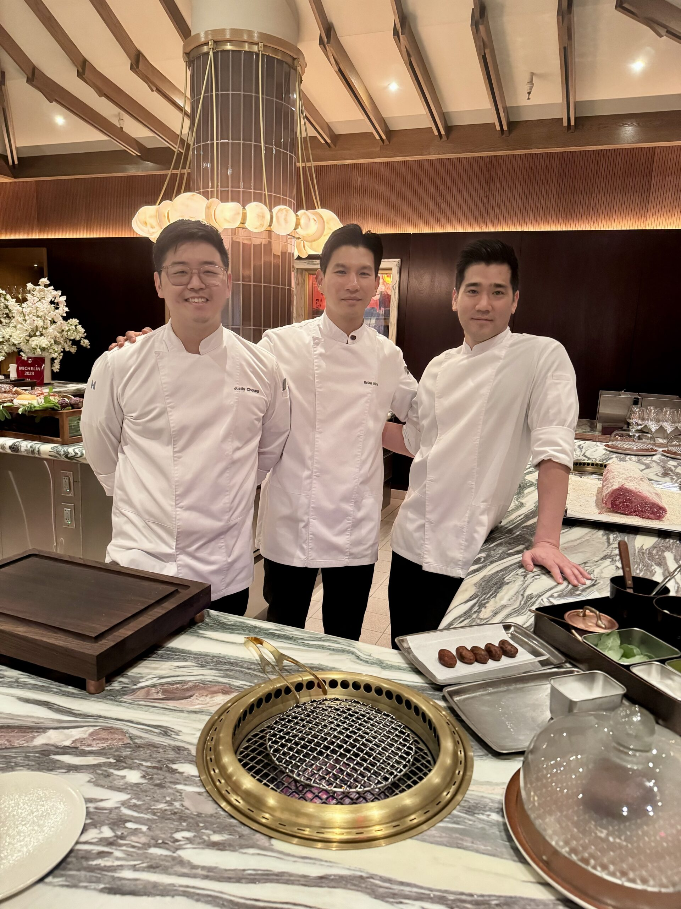

Our Culinary Philosophy
Guided by Tradition & Innovation
From omakase-style sushi to charcoal-grilled skewers, every dish is grounded in tradition and elevated with a contemporary touch. We partner with local farmers and trusted importers to bring in seasonal produce, premium seafood, and specialty ingredients.
Our chefs have honed their craft in kitchens across Japan, China, Thailand, and Korea, blending time-honored techniques with a spirit of innovation.
